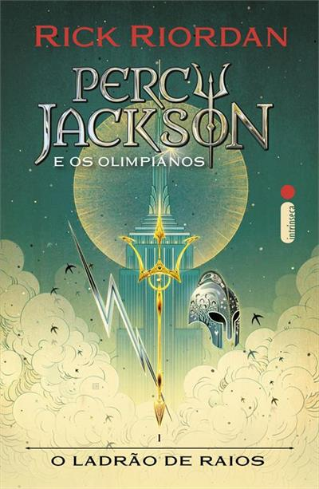

Mitologia na cultura pop
E muito comun as historias dos mitos serem reutilizados, diversas vezess em jogos, filmes, livros e musica, nesta pagina eu irei recomendar algumas obras que tem como base mitologia
Percy Jackson
Em Percy Jackson e o Ladrão de Raios, Percy Jackson, um jovem com TDAH e dislexia que se revela um semideus, filho de Poseidon, é acusado de roubar o raio mestre de Zeus. Para restaurar a paz no Olimpo, Percy embarca numa jornada perigosa com a ajuda de seus amigos, um sátiro e a filha de Atena, para encontrar o verdadeiro ladrão e recuperar o raio mestre. Ao longo do percurso, eles enfrentam criaturas mitológicas e precisam lidar com uma possível traição.
Escrito por Rick Riordan ,autor best-seller do New York Times, Percy Jakson e um livro muito divertido extremamente facíl de ler por que tem uma escrita bem contemporânea, poís e narrado pelo propio percy de doze anos, outro motivo que torna Percy Jakson tão divertido é como esse mundo de deuses e monstros se mistura com o nosso, pois existe uma névoa que faz as criaturas mitologicas parecerem comuns a os olhos de mortais, por exemplo, a roupa que Zeus veste e um terno riscado, o olimpo fica encima do Empire State Building
Mas se você não gostar de ler não se preucupe, Percy Jakson tem uma serie pelo Disney Plus, além disso caso queira fazer uma maratona de saiba que Percy jakson e o ladrão de raios e o primeiro de 5 livros, que juntos são a primeira saga, existem ainda mais 6, juntos são 36 livros, com mais 3 sendo escritos, todos disponiveis na amazom prime.
Hades
 Hades é um jogo roguelike que combina os melhores aspectos dos títulos da Supergiant aclamados pela crítica com mais de 16 premios incluindo de melhor jogo do ano,você vai estar na pele do imortal Príncipe do Submundo Zagreus, filho de Hades , você usará os poderes e as armas míticas do Olimpo para se libertar das garras do deus dos mortos, enquanto se fortalece e descobre mais sobre a história a cada tentativa única de fuga.
Hades é um jogo roguelike que combina os melhores aspectos dos títulos da Supergiant aclamados pela crítica com mais de 16 premios incluindo de melhor jogo do ano,você vai estar na pele do imortal Príncipe do Submundo Zagreus, filho de Hades , você usará os poderes e as armas míticas do Olimpo para se libertar das garras do deus dos mortos, enquanto se fortalece e descobre mais sobre a história a cada tentativa única de fuga.
Os deuses do Olimpo vão te ajudar! Conheça Zeus, Atena, Poseidon e muitos outros, e escolha entre dezenas de Dádivas poderosas que aprimoram suas habilidades. Existem milhares de construções possíveis de personagens para descobrir à medida que avança.
Além disso o jogo tem uma sequencia em desenvolvimento desenvolvida pela Supergiant Games (criadora do primeiro jogo) aprimora os aspectos mais divinos do roguelike de exploração de masmorras originais em uma experiência frenética, totalmente nova e infinitamente rejogável que se baseia no Submundo da mitologia grega, no surgimento da bruxaria e na profunda relação entre eles no papel da princesa do Submundo Melinoë, você explorará um mundo mitológico mais amplo e instigante enquanto subjuga as forças do titã do tempo com todo o poder do Olimpo ao seu lado em uma história arrebatadora que se desenrola a cada conquista e percalço.
Encante as lendárias armas da Noite com a magia dos tempos antigos para derrubar qualquer obstáculo em seu caminho. Fortaleça-se ainda mais com as poderosas bênçãos concedidas por Apolo, Zeus e outros muitos deuses do Olimpo. Você tem maneiras praticamente ilimitadas de combinar suas habilidades.
hades está disponivél para Nintendo Switch, PlayStation 5 e 4, Xbox One e Series S além de estár na steam
Epic o musical

EPIC: The Musical é uma adaptação musical da Odisseia de Homero,criada por Jorge Rivera-Herrans. A criação do musical foi documentada no TikTok de Jorge , e os clipes das músicas e os vídeos do processo viralizaram nas redes sociais, com o processo conquistando mais de 60 milhões de visualizações no TikTok.
Jorge Rivera-Herrans começou a trabalhar no musical por volta de junho de 2019, para seu trabalho de conclusão de curso. Ele queria criar um musical inspirado em videogames e animes para "emular seu viciante senso de progressão". Ele se inspirou fortemente nessas mídias e as referencia ao longo do musical, em 17 de janeiro de 2021, ele carregou seu primeiro vídeo no TikTok, onde apresentou o musical cantando um rascunho mais antigo de Full Speed Ahead Ele logo lançou outros trechos de canções do musical e começou a angariar público.
Audições de elenco também foram realizadas no TikTok e, para isso, trechos instrumentais de músicas foram liberados para acompanhamento. A primeira audição notável foi para Calypso em abril de 2021, seguida por audições para Ares , Penelope , Zeus , Tirésias e outros.
EPIC é um musical totalmente cantado, composto por 2 atos, com 20 músicas por ato, totalizando 40 músicas. Cada ato é dividido em 9 sagas, lançadas como EPs individuais. O musical completo tem duração de aproximadamente 2 horas e 22 minutos o Ato 1 tem cerca de 1 hora e 8 minutos de duração e começa na saga de troia (The Troy Saga) e termina na saga do mundo dos mortos (The Underworld Saga) enquanto o Ato 2 tem cerca de 1 hora e 14 minutos de duração e consiste em 4 sagas começando na saga do torvão (The Thunder Saga) e terminana saga de Ítaca (The Ithaca Saga)
é está disponivel no spotifyfontes: https://rickriordan.com/series/percy-jackson-and-the-olympians/
https://store.steampowered.com/app/1145360/Hades/
https://store.steampowered.com/app/1145350/Hades_II/
https://epicthemusical.fandom.com/wiki/EPIC:_The_Musical